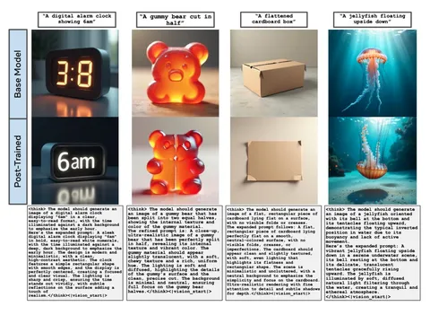

Сегодня разбираем статью, в которой нет большого нового метода и используется несколько устаревшая модель, но зато есть практичная идея для посттрейна генеративных моделей. Авторы предлагают вместо дообучения на большом датасете найти конкретные срезы, где модель работает плохо, нагенерить на них синтетики и доучиться именно на ней.
Работают здесь с BAGEL — unified-моделью, которая умеет генерировать текст и картинки. Причём статья посвящена только text-to-image (T2I), эдитинга здесь вообще нет. Суть методики можно описать следующей схемой:
1) находим слабые срезы;
2) генерируем на них много картинок самим BAGEL;
3) оцениваем генерации;
4) дообучаем BAGEL на своей же синтетике, при этом перевзвешиваем семплы по качеству.
Дальше чуть подробнее об этих шагах.
Сначала авторы определяют, какие срезы самые сложные для BAGEL. Ими оказываются relative positions, ориентация, генерация текста, количество объектов и другие характеристики.
Исходят из логики, что на простом промпте BAGEL будет стабильно генерировать хорошие картинки, а на сложном качество начнёт сильно «гулять». Поэтому для промптов из сложных срезов генерируют много семплов, оценивают их внешней reward-моделью и получают как хорошие, так и плохие генерации.
Дальше можно было бы просто отфильтровать плохие картинки и сделать обычный SFT на хороших. Но авторы делают немного иначе.
Онлайн-RL для BAGEL слишком затратный (из-за дорогого инференса), поэтому вместо него используют Reward-Weighted Regression (RWR). По сути, это SFT, где на лосс навешивается вес в зависимости от реворда конкретной генерации: хорошие семплы получают больший вес, плохие — меньший.
Также авторы пробовали применить rejection sampling, то есть просто отбирать хорошие генерации, но RWR сработал лучше. Саму процедуру при этом проводят всего один раз.
Интересный момент связан с тем, что BAGEL генерирует сначала ризонинг, а затем картинку. Поэтому авторы пробуют применять reward-weighting только к текстовому лоссу, только к картиночному и сразу к обоим. Лучше всего работает последний вариант — Multimodal RWR.
Есть ещё одно изменение относительно обычного BAGEL. Там после окончания ризонинга токен начала картинки добавляется «руками», после чего начинается генерация изображения. Здесь же модель учат саму генерировать специальный токен <|vision_start|> и так переключаться с ризонинга на картинку. Звучит как шаг в сторону мультимодальной цепочки рассуждения text → image → text → image, но до неё авторы не доходят. После ризонинга и одной картинки обратно к тексту модель не возвращается.
В результатах показали улучшения на четырёх T2I-бенчмарках и отдельно сравнивали разные стратегии сбора данных. Основной вывод в том, что датасет, специально собранный под слабые места BAGEL, работает лучше, чем широкий image-caption-корпус или данные, подобранные под бенчмарки.
Надо иметь в виду, что работа довольно BAGEL-специфичная. Кое-где авторы делают слишком общие выводы о unified-моделях, но все основные эксперименты проведены на BAGEL, поэтому насколько хорошо эта история переносится на другие модели, из работы судить сложно.
Разбор подготовила
CV Time
